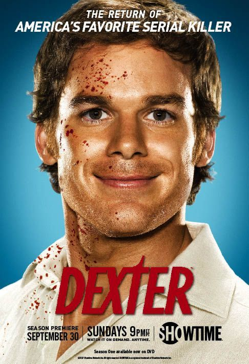
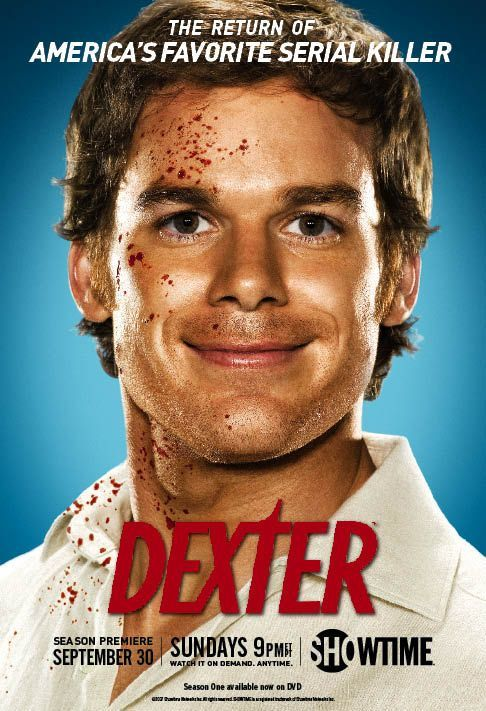

Tentang Saya

Nama: Syafiq Kebelet Elitis
Genre favorit: Thriller,Action,Comedy,Psychological,Sci-Fi
Sutradara favorit: David Fincher, Andrei tarkovsky, Stanley Kubrick
Aktor favorit: Ryan Gosling,Brad Pitt,Christian Bale
Quotes favorite :“The first rule of Fight Club is: You do not talk about Fight Club.”
“You talking to me?” – Taxi Driver
“I am the one who knocks.” – Breaking Bad
"Stop trying to control everythink and just let go! LET GO!" -Fight Club.
Saya adalah seorang cinephile yang melihat film lebih dari sekadar hiburan. Film bagi saya adalah bentuk seni yang mampu membawa kita ke dunia lain, membuka perspektif baru, dan menggali makna yang lebih dalam tentang kehidupan. Saya menyukai film dengan cerita yang kuat, karakter yang kompleks, serta kritik sosial yang tajam. Dari sinematografi yang memukau hingga naskah yang cerdas, saya selalu tertarik untuk mendiskusikan dan menganalisis film-film yang menggugah pemikiran. Selamat datang di dunia saya!
Ulasan Film
Fight Club - Film ini adalah kritik terhadap masyarakat konsumtif dan identitas maskulinitas. Mengikuti kisah seorang pria tanpa nama yang bosan dengan hidupnya, ia menemukan kebebasan dalam kekacauan bersama Tyler Durden. Seiring berjalannya cerita, kita menyadari ada lapisan psikologis yang lebih dalam dalam kepribadian mereka.
Schindler's List - Kisah nyata Oskar Schindler yang menyelamatkan lebih dari seribu orang Yahudi dari Holocaust. Film ini menunjukkan betapa satu individu bisa membuat perubahan besar dalam sejarah dan menyentuh emosi dengan penggambaran tragedi manusia.
One Flew Over the Cuckoo's Nest - Film ini mengkritik sistem kesehatan mental dan bagaimana institusi bisa menekan kebebasan individu. Karakter McMurphy mencoba melawan sistem tersebut, tetapi akhirnya menghadapi konsekuensi tragis.
Taxi Driver - Kisah seorang pria kesepian di kota besar yang perlahan kehilangan kewarasannya. Film ini menggambarkan keterasingan sosial dan bagaimana seseorang bisa bertransformasi menjadi sosok yang berbahaya akibat isolasi.
Breaking Bad - Mengisahkan perjalanan seorang guru kimia menjadi pengedar narkoba. Serial ini menunjukkan bagaimana keadaan bisa mengubah seseorang dan mempertanyakan batas moral dalam kehidupan.
Dexter - Bercerita tentang seorang pembunuh berantai yang hanya membunuh orang jahat. Serial ini membawa kita ke dalam dilema moral tentang keadilan dan pembenaran tindakan kriminal.
The Boys - Sebuah satir tentang superhero yang disalahgunakan untuk kepentingan komersial dan politik. Serial ini menunjukkan bahwa kekuatan besar sering kali diiringi dengan korupsi dan kejahatan.
The Punisher - Berkisah tentang Frank Castle, seorang pria yang kehilangan keluarganya dan memilih jalan balas dendam. Serial ini mempertanyakan batas antara keadilan dan kekerasan.


 
